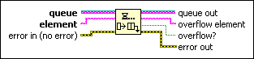

Lossy Enqueue Element Function
Owning Palette: Queue Operations Functions
Requires: Base Development System
Adds an element to a queue. If no space is available in the queue, this function removes an element from the front of the queue and discards the element to make space. Unlike the Enqueue Element function, this function does not wait for room in the queue to become available. Use the Obtain Queue function to set the maximum size of the queue.

 Add to the block diagram Add to the block diagram |
 Find on the palette Find on the palette |